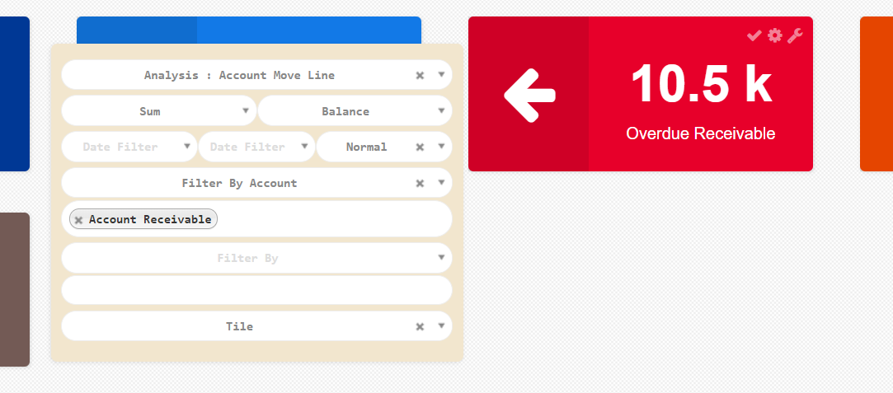
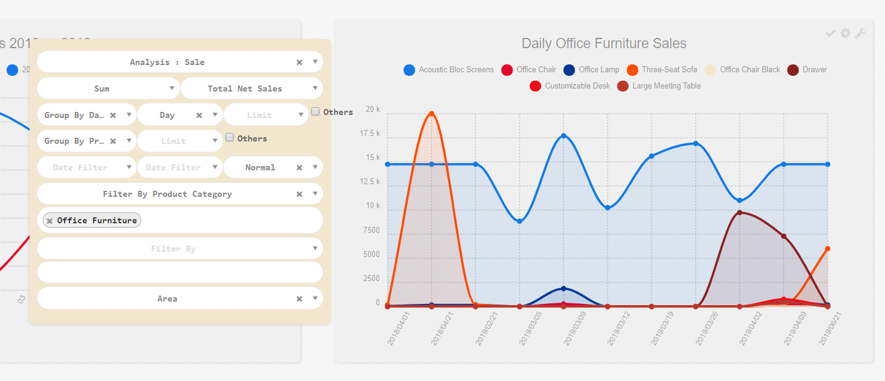
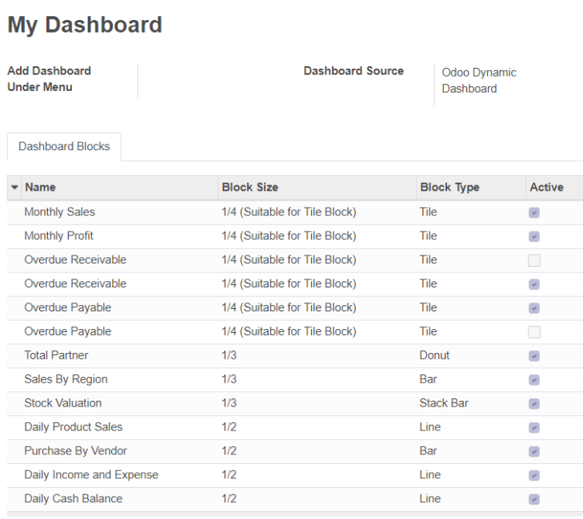

When you open the dashboard management menu, you will see a set of dashboard consists of 11 example analysis block.
Each block will have a title and a chart. To configure a chart, you can click on a wrench
or tool icon. After that, a set of configuration selections will appear on the top of the block.
A dashboard block / an analysis block is configured with several attributes. The most important one is the
model / table. It defines the base table / object that you want to analyse. For example
if you want to analyse sales, you can use table "Sale Order" or "Sales Order Line". Or you can choose our custom models (table-view with complete related fields) named "Analysis: Sale".

After that you can select the operation and measure field. Measure field is a field
that you want to calculate / measure from the table you previously defined. For any measure field you can choose one
of three operation - sum, count, or average. For example if you want to analyse total sales, you can choose operation "Sum"
of measure field "Total" from table "Sales Order Line".
And then you will find group by and sub group by selections, with limit and
others checkbox. Group by and sub group by are used to group your calculation.
For example you can group your previous calculation - total sales by customer or product or even both. You can also group by other
fields like order date, salesperson, sales status, to get another insights of your sales.
If you want to get only the top results of your calculations,
such as top 5 selling products, you can define a limit to both group by and sub group by fields.
At the bottom of the configuration, there are date filters and block / chart type selections that
you can choose to visualize your calculation.
There are more configurations provided in the form view. You can click on the cog or config
icon to open a detail configuration in a new tab. You can also save your configuration by clicking on the
check icon.
With this module, you could also build multiple dashboards, each of them can be accessed from any menu within Odoo.
You can select the list view icon in "Dashboard Management" and find the list of dashboards in the table.
Select one to add / update any calculation block and configure the dashboard.

 odoo.business.intelligence@gmail.com
odoo.business.intelligence@gmail.com